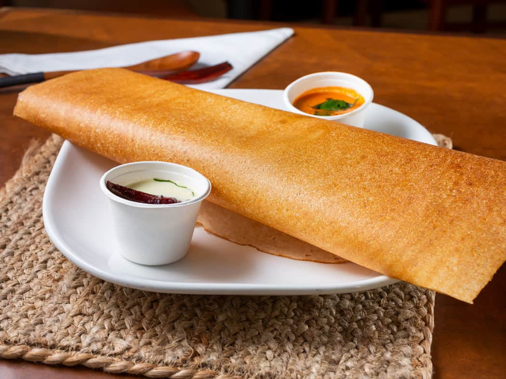
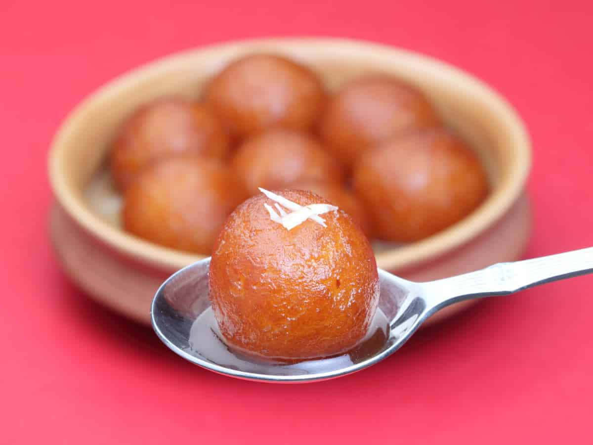

Masala Dosa
Ingredients
- Rice
- Urad dal (split black gram)
- Potatoes
- Onions
- Mustard seeds
- Curry leaves
Steps to Prepare
- Soak rice and urad dal separately for 4-6 hours.
- Grind soaked rice and dal to a smooth batter.
- Ferment the batter overnight.
- Prepare potato masala by sautéing onions, spices, and boiled potatoes.
- Heat a tawa and pour a ladle of batter, spreading it thin.
- Drizzle oil around the edges and cook until golden.
- Place potato masala in the center and fold the dosa.
- Serve hot with chutney and sambar.

Gulab Jamun
Ingredients
- Khoya (mawa)
- All-purpose flour (maida)
- Baking soda
- Sugar
- Cardamom powder
Steps to Prepare
- Mix khoya, all-purpose flour, and baking soda in a bowl.
- Add a little milk and knead into a soft, smooth dough.
- Divide the dough into small, crack-free balls.
- Heat oil or ghee in a pan on low flame.
- Fry the balls until golden brown, stirring gently.
- Prepare sugar syrup by boiling sugar, water, and cardamom powder.
- Soak the fried balls in warm sugar syrup for at least 1 hour.
- Serve gulab jamun warm or at room temperature.

Butter Paratha
Ingredients
- Whole wheat flour
- Butter
- Salt
- Water
- Ghee or oil (for cooking)
Steps to Prepare
- Mix whole wheat flour, salt, and water to make a soft dough.
- Divide the dough into small balls.
- Roll each ball into a flat circle using a rolling pin.
- Spread butter on the rolled dough and fold it.
- Roll again into a circle or triangle.
- Heat a tawa and cook the paratha on both sides.
- Apply ghee or oil while cooking until golden brown.
- Remove from tawa and spread more butter on top.
- Serve hot with curd or pickle.